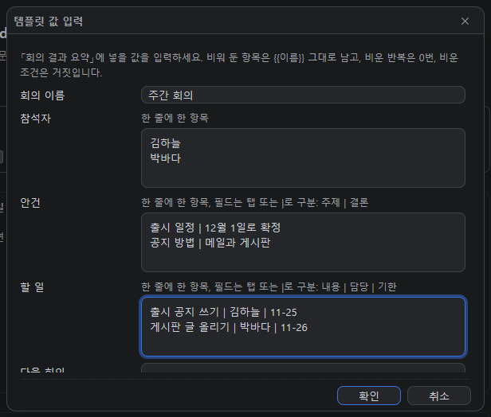

템플릿 반복과 조건
템플릿에 반복 태그를 쓰면 표의 행이나 목록 줄을 항목 수만큼 만듭니다. 조건 태그를 쓰면 값이 있을 때만 절을 넣습니다. 토큰의 기본 규칙은 템플릿과 스니펫을 봅니다.
예제 템플릿으로 해 보기
기본 템플릿과 스니펫 중 아래 항목이 반복과 조건을 씁니다.
| 이름 | 종류·그룹 | 반복과 조건 |
|---|---|---|
| 견적서 | 템플릿·회의·보고 | 품목 표의 행, 비고가 있을 때만 비고 절 |
| 회의 결과 요약 | 템플릿·회의·보고 | 참석자를 쉼표로 잇기, 안건 표의 행, 할 일 체크 상자, 다음 회의 절 |
| 출장 신청서 | 템플릿·회의·보고 | 일정 표의 행, 동행자 목록, 비고 절 |
| 체크리스트 | 템플릿·개인 | 항목마다 체크 상자 한 줄, 마감 줄 |
| 할 일 목록 (담당·기한) | 스니펫·회의·보고 | 할 일마다 체크 상자 한 줄 |
| 붙여 넣은 행으로 표 | 스니펫·표 | 붙여 넣은 행마다 표의 행 |
- 파일 > 템플릿으로 새 문서(Ctrl+Shift+N)를 클릭합니다.
- 찾기 칸에
견적서를 입력하고 [만들기] 버튼을 클릭합니다. 「템플릿 값 입력」 창이 뜹니다. - 품목 입력란에
키보드 | 2 | 15,000 | 30,000을 입력하고 Enter 를 누릅니다. - 다음 줄에
마우스 | 1 | 10,000 | 10,000을 입력합니다. - [확인] 버튼을 클릭합니다.
새 문서의 품목 표에 두 행이 생기고 번호가 1, 2 로 매겨집니다. 비고 입력란을 비웠으면 비고 절은 빠집니다.

반복 값 입력하기
반복 블록의 입력란은 여러 줄입니다. 입력란 위에 필드 차례(견적서는 이름 | 수량 | 단가 | 금액)가 보입니다.
- 한 줄에 항목 하나를 입력합니다. Enter 는 줄바꿈입니다.
- 필드는 탭이나
|로 나눕니다. 엑셀에서 같은 차례의 셀을 복사해 붙여 넣어도 됩니다. - 필드가 모자란 줄은 남은 필드가 빈 값입니다. 남는 칸은 마지막 필드에 붙습니다.
| 마우스 | 1 |처럼 앞뒤의|는 무시합니다. 빈 줄은 건너뜁니다.- 필드가 없는 반복(참석자처럼 이름만)은 「한 줄에 한 항목」이라고 보입니다.
- 조건 블록의 입력란은 비우면 거짓이고, 무엇이든 입력하면 참입니다.
표의 행 되풀이하기
{{#each 이름}} 과 {{/each}} 사이를 항목마다 되풀이합니다. 태그만 있는 줄은 줄째 빠지므로 표 행 사이에 빈 줄이 생기지 않습니다.
| 번호 | 품목 | 수량 | 금액 |
| ---: | ---- | ---: | ---: |
{{#each 품목}}
| {{@번호}} | {{이름}} | {{수량}} | {{금액}} |
{{/each}}- 안쪽의
{{이름}}같은 토큰이 그 항목의 필드입니다. 입력란에서는 처음 나온 차례대로 필드를 나눕니다. {{@번호}}는 1부터 세는 번호입니다.- 항목이 없으면 행이 없는 표가 됩니다. 대신 넣을 글이 있으면
{{else}}뒤에 씁니다.
목록과 문장 안에서 되풀이하기
필드 없이 줄만 넣는 반복은 {{this}}로 그 항목을 씁니다.
{{#each 항목}}
- [ ] {{this}}
{{/each}}
참석: {{#each 참석자}}{{this}}{{#unless @last}}, {{/unless}}{{else}}(적지 않음){{/each}}첫 블록은 항목마다 체크 상자 한 줄을 만듭니다. 둘째 줄은 참석자를 쉼표로 잇고 마지막 사람 뒤에는 쉼표를 넣지 않습니다. 참석자가 없으면 (적지 않음)이 들어갑니다.
값이 있을 때만 넣기
{{#if 비고}}
## 비고
{{비고}}
{{else}}
비고 없음
{{/if}}값이 있으면 {{else}} 앞을, 없으면 뒤를 넣습니다. {{else}}는 없어도 됩니다. {{#unless 이름}}은 값이 없을 때만 넣습니다. {{#if 이메일}}처럼 기본 토큰도 조건에 쓸 수 있습니다.
태그 표
| 태그 | 뜻 |
|---|---|
{{#each 이름}} … {{/each}} |
항목마다 안쪽을 되풀이합니다. 항목이 없으면 {{else}} 뒤를 넣습니다 |
{{#if 이름}} … {{else}} … {{/if}} |
값이 있으면 앞쪽, 없으면 {{else}} 뒤를 넣습니다. {{else}}는 없어도 됩니다 |
{{#unless 이름}} … {{/unless}} |
값이 없을 때만 넣습니다 |
{{필드}} |
반복 안에서 그 항목의 필드 값. 항목에 없으면 바깥 값이고, 둘 다 없으면 빈 값입니다 |
{{this}} |
반복 안에서 항목 자체(필드 없이 줄만 넣은 목록) |
{{@번호}} {{@number}} |
1부터 세는 항목 번호. {{@index}}는 0부터입니다 |
@first @last |
조건에 씁니다. 첫 항목, 마지막 항목이면 참입니다 |
- 공백만 있는 값, 빈 목록, 넣지 않은 값은 거짓입니다. 반복은 0번 됩니다.
- 태그만 있는 줄은 줄째 빠집니다. 표 행 사이에 빈 줄이 생기지 않습니다.
- 반복은 두 겹, 블록은 네 겹까지 겹칠 수 있습니다. 항목은 500개까지입니다.
- 짝이 맞지 않는 태그는 그대로 두고 줄 번호를 알립니다. 코드 블록 안의 태그는 바꾸지 않습니다.
- 계산은 하지 않습니다. 합계 같은 값은 따로 입력합니다.
막힐 때
- 「짝이 맞지 않는 블록 태그는 그대로 두었습니다」 알림이 뜨면 알림의 줄 번호에서
{{#each}}·{{#if}}마다 닫는 태그가 있는지 봅니다. 닫는 태그는 여는 태그와 종류가 같아야 합니다. - 필드 칸이 한 칸씩 밀리면 입력란 위의 필드 차례와 줄의 칸 수를 맞춥니다. 엑셀에서 붙여 넣을 때는 열 차례를 맞춥니다.
- 필드 이름으로
날짜·작성자같은 기본 토큰 이름은 쓰지 않습니다. 반복 안에서도 오늘 날짜·작성자가 들어갑니다. - 편집기의 자동 완성(Ctrl+Space)으로 넣은 스니펫은 값을 묻지 않으므로 태그가 그대로 남습니다. 서식 > 스니펫(Ctrl+Shift+A)으로 넣습니다.